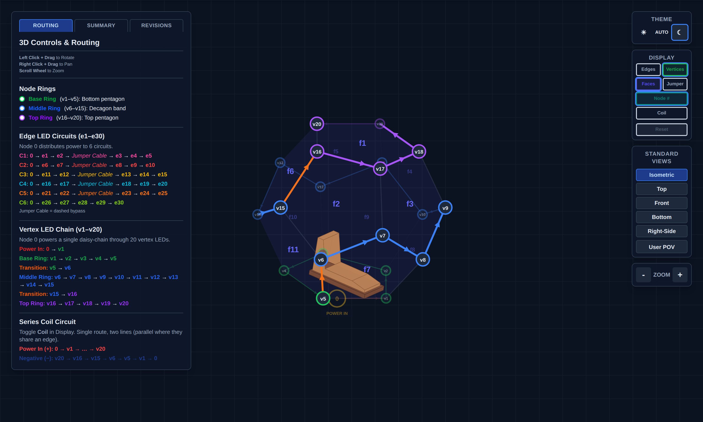
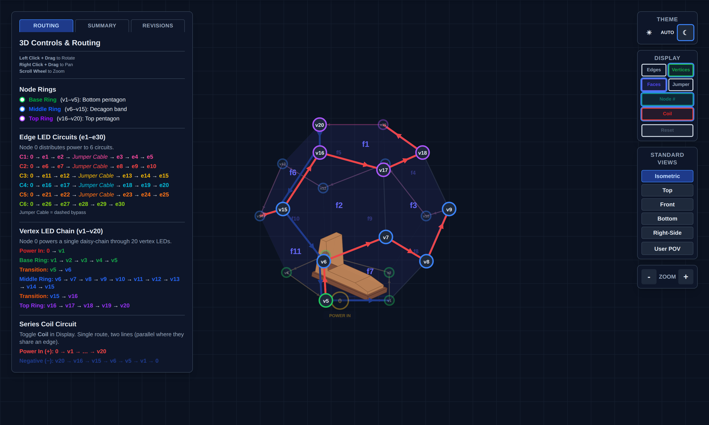

NaoDec Build — Step 3: Vertex Units Installation (+ Series Coils)
Revision: 1.0 Date: 2026-07-14 Status: Drafted from the author's outline + decisions 1, 3, 9. Mounting method and some routing details TBD (see Open Items). The series-coil subsystem remains pre-release (Rev 0) — its numbers are provisional and it must not be powered outside its own qualification gates.
Purpose
With all 11 panels up, install the 20 vertex units (LED channel CH1) in daisy-chain order, co-route the series-coil loop along the same path (decision 3), and bring both runs out at node 1 toward the controller unit.
Quick Reference
| Item | Value | Source |
|---|---|---|
| Vertex units | 20 units × 3 LEDs = 60 × WS2815 | NaoDec_WS2815_LED_Controller_Rev1.6.html |
| Channel | CH1 · Master GPIO1 · WLED Out 1 | same |
| Chain path | Node 0 → v1 → v2 → … → v20 (one daisy-chain) | NaoDec_3D_Vertex_and_Edges_LED_Mapping_Rev1.3.html |
| Cable run | ~20 m — the longest data run in the rig | README |
| Data cable | AWG18, shielded twisted pair advised; bench-verify the waveform | controller doc, Note 14 |
| Power | Isolated 12 V / 5 A rail (PSU-B); 16 AWG branch (README says 18 — discrepancy already logged in NaoDec_Power_and_Controller_Box_Report.md §10) |
power report |
| Optional injection | 2nd 12 V/5 A feed at LED #31 (mid-chain), separate +12 V rails, common GND | controller doc, Note 17 |
| WS2815 backup line | HEAD pixel BI → GND; downstream BI ← previous DO | controller doc, Note 6 |
| Coils (pre-release) | 60 × 7-turn coils, 3 per vertex unit; route with the vertex chain | decision 3 · coil docs |

The single CH1 daisy-chain: POWER IN (Node 0) → v1, base ring v1–v5, transition v5→v6, middle ring v6–v15, transition v15→v16, top ring v16–v20. Snapshot ofNaoDec_3D_Vertex_and_Edges_LED_Mapping_Rev1.3.html (circuits hidden).
3.1 Install the vertex units
- Confirm Step 2's release gate passed (structure rigid, base registered — v1 is where the marks say it is).
- Fit the 20 vertex units at v1…v20, in chain order starting at v1 (data flows v1 → v20; WS2815 is fed at DI, arrows in the mapping page show direction).
- Wire unit-to-unit exactly per the chain path — base ring first (floor level), then middle ring, then top ring (v16–v20 are overhead work inside the closed dome; do them before the floor fills up in Step 6).
- Tie the first pixel's BI to GND; downstream each BI takes the previous pixel's DO (controller doc Note 6).
- If the optional mid-chain power injection is adopted, land the second 12 V feed at LED #31 — that is an additional run to node 1 to include in Step 8's inventory.
3.2 Series-coil co-routing (pre-release Rev 0)
Per decision 3, the 60-coil series loop (3 coils per vertex unit) routes along the same path as the vertex chain:
- Positive: Node 0 → v1 → … → v20 (with the chain).
- Return: v20 → v16 → v15 → v6 → v5 → v1 → Node 0 (per the mapping page's coil view).

Coil loop co-routed with the vertex chain. Snapshot ofNaoDec_3D_Vertex_and_Edges_LED_Mapping_Rev1.3.html (Coil display on).
Non-negotiables from the coil docs (NaoDec_Series_Coil_Build_Rev0_Pre-Release.html, NaoDec_Vertex_Series_Coil_Rev1.0.html, CLAUDE.md):
- Never run the string without the XL4015 CC/CV buck (CV 11.0 V, CC 3.0 A). The cold loop is ~1.85 Ω — direct 12 V would attempt ~6.5 A / ~78 W.
- Exact 3 A slow-blow fuse at the buck input (not 3–5 A), local input decoupling, and a 70–80 °C thermal cutoff bonded to the hottest area.
- The coil branch keeps its own isolated 12 V feed — never tied to the LED V+ rails.
- Keep all runs and slack uncoiled; JST SM connectors with both pins paralleled.
- Subsystem is pre-release: it does not power up in Step 9 until its own qualification (see
XL4015_CC_CV_Mockup_Test_Procedure.md) and the assembled-loop resistance measurement pass.
3.3 Routing and labeling to node 1
- Dress both runs (CH1 data+power, coil pair, optional injection feed) down to the v1 base corner and out through the Step 1 pass-through (Step 1 Open Item #6) toward the controller unit ~2–3 m away.
- Label every conductor at both ends (scheme TBD — see Open Items); leave service loops at node 1.
- Do not land anything at the controller unit yet — that's Step 8.
Safety
- No powered work: rails stay off/disconnected throughout Steps 3–7.
- Overhead work at v16–v20 inside the closed structure — ladder footing on the platform, don't load panel frames or fabric.
- The coil loop stays open-circuit (insulated ends) until Step 9's qualification.
Release Gate
| Gate | Required Result |
|---|---|
| Chain order | 20 units wired v1 → v20, DI direction verified against the mapping page |
| Continuity/polarity | End-to-end continuity; +12 V/GND polarity checked at head, LED #31, and tail — before access gets harder |
| BI wiring | Head BI → GND confirmed |
| Coil loop | Routed with chain, ends insulated, loop resistance measured and recorded (expect ~1.85 Ω cold, per coil docs) |
| Labeling | Every run labeled both ends; service loops left at node 1 |
| Rails | No connection to any PSU yet; coil branch physically separate from LED wiring |
Open Items
- Vertex-unit mounting method at the frame corners — bracket/clip/strap: TBD.
- Injection run decision — adopt the LED #31 mid-chain feed or not (affects Step 8 inventory).
- Labeling scheme + strain relief spec at node 1 (shared with Steps 4–6; define once).
- Ceiling access — v16–v20 are reachable only from inside once
f1-f5closes; confirm ladder/scaffold approach that doesn't load the frames.